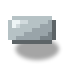
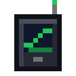
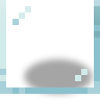
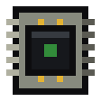
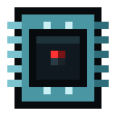
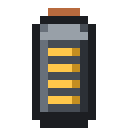

Reactor Tablet
alaindustrial:reactor_tablet
Summary
Reactor Tablet is a carried item that shows a reactor from far away. It binds to a room's antenna and opens the same screen as the controller — all five tabs — but in view-only mode.
This is tier 1, the very basics: you can look, you cannot control. The tablet's screen has no depth slider and no STOP button, and the server itself rejects any control request from the client. Later the tablet will grow by tiers (signal boosters, other dimensions, control —; this spec covers only the first.
The tablet is rechargeable: it has an EU/FE buffer of its own, spends charge while the screen is open, and shows static when it has none. You have to recharge it yourself.
Status: spec. The charge and upkeep numbers are in (see "Balance").
A short example: you put an antenna in the room's wall → shift-right-click the antenna with the tablet (binding) → walk 40 blocks away from the build → right-click with the tablet → the controller screen opens, showing heat, output and rods; there is no slider and no STOP. Walk 100 blocks away → the same screen, but with static over it and the words "out of range". Come back into range → the static is gone, the data is live again, and there is no need to reopen the screen.
Energy
| Field | Value |
|---|---|
| Tablet buffer | = 20000 EU/FE |
| Charging | in the mod's chargers, like other electric items |
| Energy intake | = 32 EU/FE/tick |
| Draw with the screen open | = 2 EU/FE/tick |
| Draw during a reactor overload | = 6 EU/FE/tick |
| Draw with the screen closed | 0 |
The tablet is an electric item of the same kind: the buffer and the energy intake live on the item, and the capacity and the item capability are declared the same way as for the others.
- The draw runs only while the screen is open. A closed tablet in a bag spends no energy.
- Overload is the reactor's warning state (heat at the "caution" line or higher): while it lasts the screen flickers with static, and the tablet spends a little more.
- The charge is deducted on the server, in the same tick as the link is recalculated.
- A discharged tablet does not refuse to open: the screen opens with static and the reason "tablet discharged" (see "No link").
There is no wireless recharging from the antenna in tier 1: that is an improvement for a future tier.
How it's used
Binding
- Shift-right-click on a Reactor Antenna writes into the tablet the dimension and position of the controller of its room (that is, the reactor, not the antenna itself).
- The tablet remembers one reactor. A second shift-right-click on another antenna rebinds: the previous binding is replaced, there is no list.
- Without an antenna the tablet cannot be bound: shift-right-click on the controller itself writes nothing.
- The sound and the confirmation of binding follow the model of the Teleporter Remote; the detail is settled at implementation.
The screen
Right-click with the tablet in the air opens the screen of the bound reactor. It is the same screen as the controller's own panel, with the same set of tabs — "Console", "Room", "Core", "Circuit" and "Log" — but in
| What | On the tablet's screen |
|---|---|
| Header, status plate, accident countdown bar | as on the controller |
| All five tabs, marks on closed tabs | as on the controller |
| Depth slider | hidden, and the server rejects a depth request from the client |
| STOP button | hidden, and the server rejects a stop request from the client |
| The "log read" mark | allowed: it is not control of the reactor |
| Inventory and slots | none, as on the controller |
The data comes over the same channels and the same zone and log packets as the controller's, only while the screen is open. The server does not duplicate the data: its load equals the load of a player standing at the controller itself.
The screen closes only if the tablet is no longer in the hand. No loss of link closes the screen.
In the hands and the screen unfolding
The tablet feels like a handheld instrument, not like "an item that opens a window":
- Right-click — the hands raise the tablet into the frame from below and hold it with both hands by the rubber side brackets (about 0.3 s).
- The screen unfolds from the raised tablet: the body grows to almost the whole screen and the world around it darkens (about 0.3 s), then the glass switches on like an old monitor: a bright line in the middle opens out into a picture (about 0.25 s). While the body is moving, the screen accepts no clicks. On the way up the tablet is slightly turned and straightens at eye level; once raised, it "breathes" a little in the hands.
- Closing (Esc, the inventory key) plays the same thing in reverse: the screen folds back into the tablet and goes away, and the hands lower the tablet already without a screen — control returns at once. A second press of Esc during folding closes the screen immediately.
The body on screen is dark, with rubber brackets along the edges, the item's name, signal bars, a link lamp, the charge percentage and label at the top, and buttons and speakers at the bottom. The body shows
| State | What you see |
|---|---|
| link is up, reactor calm | the lamp burns a steady green |
| reactor overheated, steam shut off, little water (the console's yellow plate) | the lamp blinks amber once a second, the amber rim of the glass "breathes" |
| meltdown, explosion countdown, bare assembly at its limit (red plate) | the red fill of the screen pulses smoothly (a 1.25 s cycle, no dips), the lamp blinks red once a second |
| no link (any reason from the table below) | static, the screen smoothly darkens and lightens (no deeper than 35 %, a 2.5 s cycle), the lamp blinks red once a second |
| charge below 20 % | the charge label is red and blinks once a second; with no charge — empty |
No sharp flashes. The first version (a lamp every 120 ms, random 60 ms dips of the screen) was painful to look at; the owner asked for it to be softened (in-game check, 2026-11-03). Now nothing on the body blinks more often than once a second, and the fill and the darkening change smoothly — with a margin below the three flashes per second of the accessibility rules (WCAG 2.3.1). A unit test holds both limits.
The body and the panel have one source: the link comes from the tablet's menu, the reactor's state from the same console output that colours its plate, and the charge from the tablet in the hand.
Look. The item is a volumetric model, a "console with knobs" (the owner's choice of 2026-11-02): a body with a screen, ribbed rubber brackets on the sides, a lamp on the lid. The icon on the guide site is still the old flat one.
The accident is visible on the item itself. While the reactor the tablet hears is in a red alert (the same console output that colours the plate), the amber lamp and the handle lugs on the model turn red and slowly "breathe" (a 1.3 s cycle) — in the hotbar, in the hand and on the ground, even with the screen closed. The server checks this once a second and puts the mark on the item; the item model picks its variant by the mark. Only a tablet with a link gets the mark: one that is unbound, discharged or out of range does not turn red (the owner's request, 2026-11-03).
The off hand. The tablet works from either hand (the main hand is checked first). While the animation runs, both hands hold the tablet, and the item in the other hand is not drawn. Third person does not change: other players see ordinary item holding.
Pause. The tablet's screen does not pause a single-player game: the data is live.
No link
The screen always opens. If there is no link, the reactor panel is not visible at all: no tabs, no header, no page buttons, the mouse highlights nothing and there are no tooltips. In its place, over dim static, is a reason card: "NO SIGNAL", an icon, the name of the reason and one line on what to do (the owner's decision from the in-game check,. When the link comes back, the panel appears by itself on the tab where it was left. The reasons:
| Reason | When | Icon and hint on the card |
|---|---|---|
| out of range | in the same dimension, but farther than = 64 blocks from the nearest powered antenna | compass: move closer to the antenna |
| other dimension | the player and the reactor are in different dimensions (tier 1 has no link between worlds) | Eye of the End: the reactor is in another dimension |
| no antenna | the reactor has no antenna found by the controller (including when the antenna was broken) | antenna: build one into the room's wall |
| antenna unpowered | there is an antenna, but neither a cable nor the reactor feeds it | cable: run it to the antenna or its mast, or start the reactor |
| tablet discharged | the tablet has no EU/FE | charging station: charge it there |
| reactor not responding | the chunk with the controller is not loaded | controller: the area is not loaded, come closer |
| not bound | the tablet is not bound to anything | antenna: Shift+right-click the reactor's antenna with the tablet |
The link is recalculated every tick: leave the zone — static, come back — the data returns by itself, with no reopening of the screen.
Chunks are not loaded for the tablet's sake. If the controller is in an unloaded chunk, that is "reactor not responding", and nothing is forced.
Range is 64 blocks on all three axes from the nearest powered antenna of the reactor the tablet is bound to, in the same dimension. The range calculation and the dimension check are one link function, to which the booster cards will be added later; there are no other paths for range.
The static is redrawn by the client from scratch using GUI means, with no direct calls to the graphics API.
Tooltip
When you hover over the tablet in the inventory, it shows:
- one line on what right-click does ("Right-click: open");
- the coordinates of the bound reactor ("Reactor: X Y Z"); for an unbound one — "Not bound" and, on the line below, how to bind it ("Shift-right-click an antenna");
- the charge, and for an empty one — "Discharged".
Each thought gets its own short line (the owner's decision of 2026-11-02: a long tooltip was hard to read). The dimension is not written in the tooltip; the tablet names another dimension on the screen, when the reactor cannot be reached. You can also bind by clicking the antenna's mast.
What the tablet does not do
- It does not control the reactor. A reactor can be shut down or started only on the spot (a redstone signal, the controller's slider, the reactor lever). Control is a separate future tier with protection against bypassing the reactor's hazard.
- It gives no alarm sound. There is no beeping in the hand (the owner's decision).
- It does not load chunks.
- It does not work between worlds and is not strengthened by cards.
- It does not remember several reactors.
- It has no empty slots "for the future".
Animation
The animation in the hands and the tablet unfolding to almost the whole screen are a separate task,; this spec does not cover them.
Block properties
Not applicable (an item). Stack size: 1.
Recipes
The craft is expensive: the nuclear stage, close to the reactor controller in price. Shape TGT / ARA / TBT, output 1 tablet.
| Symbol | Ingredient |
|---|---|
| T | Tin Plate (tag #c:plates/tin,) |
| G | colourless glass pane (tag #c:glass_panes/colorless) |
| A | Advanced Circuit |
| R | Reactor Control Circuit |
| B | Battery |
The recipe unlocks in the recipe book when the inventory holds a reactor control circuit and a battery.
Progression
- An item of the item category. Energy intake tier: LV; available after the nuclear stage (controller, antenna).
- Requires: a Reactor Antenna on the reactor.
- Unlocks: remote viewing of a reactor; later — boosters, a link between worlds, control.
Related
- Reactor Antenna — without it the tablet cannot see the reactor.
- Reactor Controller — whose screen and whose data the tablet shows.
- Teleporter Remote — the model of binding a carried item by shift-right-click.
- Electromagnet — the model of a rechargeable item.
Crafting
Shaped Crafting




▶
Reactor Tablet